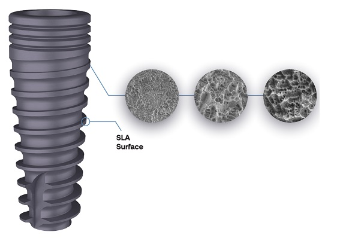

Coatings
Surface coatings play a crucial role in enhancing the biological performance of titanium implants. They transform inert surfaces into bioactive interfaces capable of promoting bone healing, controlling inflammation, and delivering therapeutic agents directly at the implant site.

The main types of coatings applied to implants include:
1. Inorganic Coatings
- Hydroxyapatite (HA), calcium phosphate (CaP), and β-tricalcium phosphate (β-TCP) are the most common inorganic coatings.
- These materials closely mimic the mineral phase of natural bone, enhancing osteoconduction and facilitating early-stage bone formation around the implant.
- Their bioactive nature encourages rapid bonding between the implant and the host bone, improving long-term stability.
2. Polymeric and Drug-Delivery Coatings
- Advanced polymeric systems, such as hydrogels, multilayer coatings, and nanocarriers, are engineered to deliver therapeutic molecules directly at the implant surface.
- These coatings enable the controlled release of:
- Antibiotics, to prevent post-surgical infections;
- Anti-inflammatory agents, to modulate immune response and promote healing;
- Osteoinductive factors like Bone Morphogenetic Proteins (BMPs), to stimulate new bone formation.
3. Peptides and Protein Functionalization
- The immobilization of bioactive molecules such as fibronectin, RGD peptides, and BMPs onto the implant surface enhances cell adhesion, proliferation, and osteogenic differentiation.
- These functionalized surfaces actively communicate biochemical signals to surrounding cells, accelerating the osseointegration process.
Through the integration of inorganic, polymeric, and biologically active coatings, modern implants are designed not only to replace missing structures but also to actively promote tissue regeneration, reduce complications, and optimize clinical outcomes.